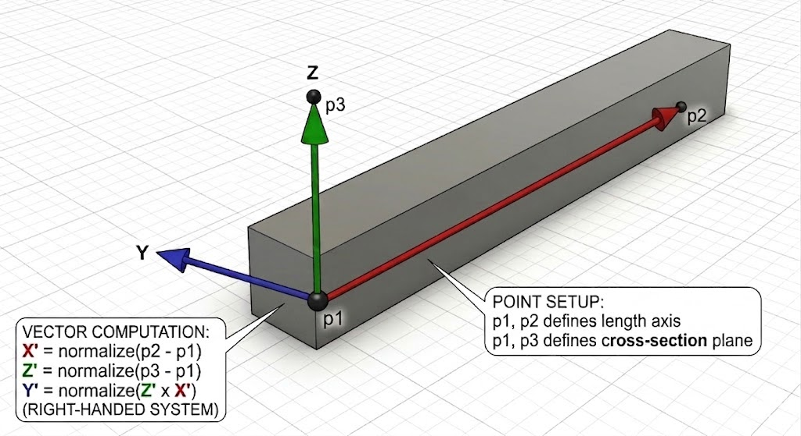
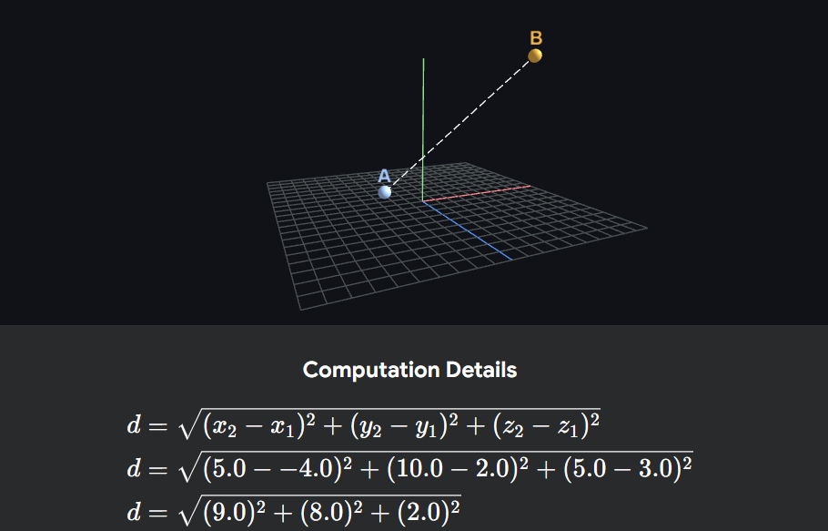

Geometry — Linear Algebra in 3D¶
Almost every cadwork API call that creates or moves elements takes points and vectors as arguments. This page is a short refresher on the linear algebra you need: what a point is, what a vector is, how the two interact, and how the unit circle turns angles into directions.
In the cadwork Python API, both points and vectors are represented by the same type, cadwork.point_3d. The mathematical meaning (position vs. direction) lives in your head, not in the type — keeping that distinction sharp will save you many bugs.
Coordinate space (right-handed)¶

cadwork elements - Local Coordinate System (LCS)¶
Every element has its own local coordinate system (LCS) that defines how it is oriented in 3D space. The LCS has three axes:
- Length axis: The primary axis along the length of the element (e.g., along a beam or joist).
- Width axis: The secondary axis that defines the width of the element (e.g., across a beam or joist).
- Height axis: The tertiary axis that defines the height of the element (e.g., vertical direction for a beam or joist).

Points¶

A point is a position in 3D space. It answers the question where? — for example, the axis start of a joist.
Translating a point (point + vector)¶
Adding a vector to a point shifts it by that displacement. The result is a new point.
import cadwork as cw
origin = cw.point_3d(0, 0, 0)
offset = cw.point_3d(625, 0, 0) # used as a vector here
moved = origin + offset # cw.point_3d(625, 0, 0)
# (origin.x + offset.x, origin.y + offset.y, origin.z + offset.z)
This is exactly how Exercise 5 in Create & Modify places joists at y = i * 625 — repeated translation along the Y-axis.
Distance between two points¶

import cadwork as cw
p1 = cw.point_3d(0, 0, 0)
p2 = cw.point_3d(5000, 0, 0)
length = p2.distance(p1) # 5000.0
Internally this is just sqrt((p2.x - p1.x)**2 + (p2.y - p1.y)**2 + (p2.z - p1.z)**2).
Midpoint between two points¶
The midpoint is the average of the two coordinates:
This is a common building block — for example, when placing blocking at the center of a joist span.
Vectors¶
Interpreting a vector as a sequence of displacements¶

A vector has a direction and a magnitude (length). It answers the question how far, and which way? — for example, "from P1 to P2" or "5000 mm along +X".
The key idea: point − point = vector. Subtracting two points gives the displacement from one to the other.
import cadwork as cw
p1 = cw.point_3d(0, 0, 0)
p2 = cw.point_3d(5000, 0, 0)
direction = p2 - p1 # vector pointing from p1 to p2
# direction = cw.point_3d(p2.x - p1.x, p2.y - p1.y, p2.z - p1.z)
Length (magnitude) of a vector¶
The length of a vector v = (x, y, z) is sqrt(x² + y² + z²). For a vector built from p2 - p1, this equals p2.distance(p1).
Normalizing — making a unit vector¶
A unit vector has length 1. It carries direction only, no magnitude. You normalize a vector by dividing each component by its length:
This is the 5th argument to ec.create_rectangular_beam_vectors(width, height, length, p1, length_direction, local_z_direction): cadwork wants a direction, not a "to" point, so the magnitude must be stripped away.
Don't normalize the zero vector
(p1 - p1).normalized() divides by zero. If you compute a direction from two points, make sure they are distinct.
Adding and scaling vectors¶
Vectors can be added (combine two displacements) and scaled (stretch or shrink a displacement). Scaling a unit vector by a length gives you a vector of exactly that length.
direction = (p2 - p1).normalized() # length 1
offset_2m = cw.point_3d(direction.x * 2000,
direction.y * 2000,
direction.z * 2000)
midpoint = p1 + cw.point_3d(direction.x * 2500,
direction.y * 2500,
direction.z * 2500)
Pattern: start point + (unit direction × distance) = point at that distance along the direction. This is how you place an element 2.5 m along an arbitrary axis without caring whether the axis is X, Y, or diagonal.
origin = cw.point_3d(0, 0, 0)
direction = cw.point_3d(1., 0., 0.) # along global X axis
length = 2500.0
p = origin + direction * length
# what happens behind the operator overload: p = cw.point_3d(
# origin.x + direction.x * length,
# origin.y + direction.y * length,
# origin.z + direction.z * length,
# )
| origin.x | | direction.x |
origin = | origin.y | d = | direction.y |
| origin.z | | direction.z |
p = origin + d * length
| origin.x + direction.x * length |
p = | origin.y + direction.y * length |
| origin.z + direction.z * length |
With origin = (0, 0, 0), direction = (1, 0, 0), length = 2500:
| 0 + 1 * 2500 | | 2500 |
p = | 0 + 0 * 2500 | = | 0 |
| 0 + 0 * 2500 | | 0 |
Dot product — angle and projection¶
The dot product a · b = a.x*b.x + a.y*b.y + a.z*b.z collapses two vectors into a single number. Its sign and magnitude tell you how the vectors relate:
| Dot product of unit vectors | Meaning |
|---|---|
1 |
same direction (parallel) |
0 |
perpendicular |
-1 |
opposite direction |

For unit vectors, a · b = cos(angle between them). So to find the angle:
import math
def dot(a, b):
return a.x * b.x + a.y * b.y + a.z * b.z
cos_theta = dot(u1, u2) # u1, u2 already normalized
angle_rad = math.acos(cos_theta) # cos takes an angle and returns a ratio (a number between -1 and 1).
# acos takes a ratio and returns an angle (in radians).
angle_deg = math.degrees(angle_rad)
Projection¶
The dot product also gives you the length of the projection of a onto b:

Use it to check whether two beams are parallel, perpendicular, or to filter elements by orientation.
Distance from a point to a line¶
The distance from a point p to the line through p1 in direction d is the length of the projection of p - p1 onto the plane perpendicular to d:
def distance_point_to_line(p: cw.point_3d, p1: cw.point_3d, d: cw.point_3d) -> float:
v = p - p1
projection_length = dot(v, d.normalized()) # t (t = how far along the line the projection falls)
projection = cw.point_3d(d.x * projection_length,
d.y * projection_length,
d.z * projection_length)
# projection = p + t * d
rejection = v - projection # perpendicular from p to the line
return rejection.length()
Distance from a point to a plane¶
The distance from a point p to the plane through p1 (plane origin) with normal n is the length of the projection of p - p1 onto n:
def distance_point_to_plane(p: cw.point_3d, p1: cw.point_3d, n: cw.point_3d) -> float:
v = p - p1
projection_length = dot(v, n.normalized()) # t (t = how far along the normal the projection falls)
projection = cw.point_3d(n.x * projection_length,
n.y * projection_length,
n.z * projection_length)
# projection = p + t * n
return projection.length()
Cross product — perpendicular direction¶

The cross product a × b returns a new vector perpendicular to both a and b. It is how you build local coordinate systems: given a length axis and an "up" hint, the cross product gives you the side axis.
def cross(a: cw.point_3d, b: cw.point_3d) -> cw.point_3d:
return cw.point_3d(
a.y * b.z - a.z * b.y,
a.z * b.x - a.x * b.z,
a.x * b.y - a.y * b.x,
)
length_axis = (p2 - p1).normalized()
up_hint = cw.point_3d(0, 0, 1)
side_axis = cross(length_axis, up_hint)
Point vs. Vector — the mental model¶
Same type in code, different meanings in math:
| Concept | Answers | Example | Operations that make sense |
|---|---|---|---|
| Point | where? | start of a joist | point − point, point + vector |
| Vector | how/where to? | "along +X by 5000 mm" | add, scale, normalize, dot, cross |
Two rules of thumb:
- Point + Point is meaningless (averaging coordinates is fine for a midpoint, but adding "two locations" has no geometric meaning).
- Vector + Vector, Point + Vector, and Point − Point are the operations you actually use.
The Unit Circle¶
The unit circle is the circle of radius 1 centered at the origin. Every point on it can be written as (cos θ, sin θ), where θ is the angle measured counter-clockwise from the +X axis.

This single fact — angle ↔ point on the unit circle — is the bridge between angles and directions. Whenever you need to "go in some direction" or "rotate something", the unit circle is doing the work behind the scenes.
1. Building a direction vector from an angle¶
To create a horizontal unit vector pointing at angle θ (in the XY plane):
import math
import cadwork as cw
angle_deg = 30
theta = math.radians(angle_deg)
direction = cw.point_3d(math.cos(theta), math.sin(theta), 0)
Multiply by a length to get a displacement, then add to a start point — and you have placed a beam at any angle without computing X and Y by hand.
2. Distributing elements around a circle¶
Want N posts evenly spaced around a center point? Step θ from 0 to 2π in N increments and read off the unit circle:
import math
import cadwork as cw
import element_controller as ec
center = cw.point_3d(0, 0, 0)
radius = 3000
count = 8
for i in range(count):
theta = 2 * math.pi * i / count
p1 = cw.point_3d(
center.x + radius * math.cos(theta),
center.y + radius * math.sin(theta),
center.z,
)
p2 = cw.point_3d(p1.x, p1.y, p1.z + 2500) # vertical post, 2.5 m tall
# ec.create_rectangular_beam_vectors...
This is the classic "place columns around a gazebo" pattern — and it generalizes to any radial layout (fasteners around a connector, light fixtures around a hall, etc.).
3. Rotating a 2D point around the origin¶
Rotating the point (x, y) by an angle θ is a direct application of sine and cosine:
def rotate_xy(p, theta):
return cw.point_3d(
p.x * math.cos(theta) - p.y * math.sin(theta),
p.x * math.sin(theta) + p.y * math.cos(theta),
p.z,
)
To rotate around an arbitrary center c, translate to the origin, rotate, translate back:
def rotate_around(p, center, theta):
shifted = cw.point_3d(p.x - center.x, p.y - center.y, p.z - center.z)
rotated = rotate_xy(shifted, theta)
return cw.point_3d(rotated.x + center.x,
rotated.y + center.y,
rotated.z + center.z)
4. Recovering an angle from a direction¶
The inverse of (cos θ, sin θ) is atan2(y, x). Use math.atan2 (not atan) — it handles all four quadrants and the edge cases where x = 0.
import math
direction = (p2 - p1).normalized()
angle_rad = math.atan2(direction.y, direction.x)
angle_deg = math.degrees(angle_rad)
This is how you answer "what angle does this beam make with the X-axis?" — useful when sorting elements by orientation or labeling them by compass direction.
Summary¶
- A point is a where; a vector is a how far / which way.
point − pointgives a vector.point + vectorgives a point.vector.normalized()keeps the direction, drops the length.- Build positions with the pattern start + (unit direction × distance) — it works for any axis, not just X / Y / Z.
- The unit circle turns angles into directions via
(cos θ, sin θ). Use it for radial layouts, rotations, and recovering angles withatan2.
With these few operations you can already express every placement and movement task in the Geometry and Create & Modify exercises.